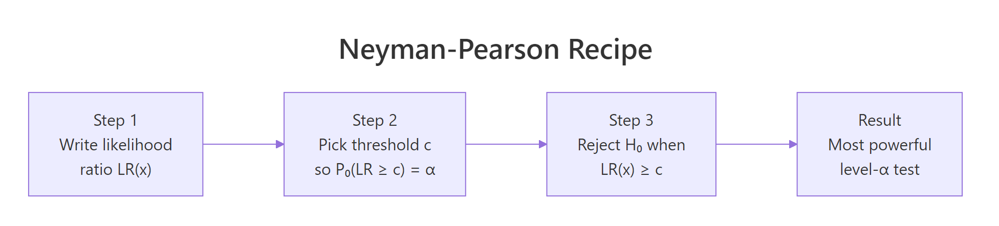
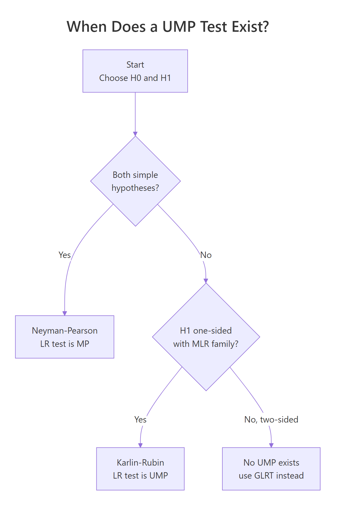

Neyman-Pearson Lemma in R: Most Powerful Tests & UMP Explained
The Neyman-Pearson Lemma proves that the likelihood ratio test is the most powerful way to decide between two simple hypotheses: for any fixed Type I error rate, no other test catches a true alternative more often.
What does the Neyman-Pearson Lemma actually say?
Two tests can control the same Type I error rate and still disagree on the truth. The lemma names the single test that catches a true alternative most often. Below we pit the Neyman-Pearson (NP) test against a reasonable-looking competitor, both calibrated to the same alpha, and measure how often each one correctly rejects a false null.
The setup: samples of size 20 from either $H_0: X \sim N(0, 1)$ or $H_1: X \sim N(0.5, 1)$, with $\alpha = 0.05$. The NP test rejects when the sample sum is large. The competitor rejects when the sample maximum is large. Both are valid level-0.05 tests. Only one is optimal.
The NP test catches the true alternative 72% of the time. The max test, calibrated to the same 5% error rate, catches it only 19% of the time. That is a nearly four-fold difference in power for the same error budget. The lemma guarantees this: no test at alpha=0.05 can beat the NP test's 72% power against this alternative.
Try it: Rerun the simulation with n <- 40. How much power does the NP test gain, and does the max test keep up?
Click to reveal solution
Explanation: Doubling the sample size pushes NP power from 0.72 to 0.94. Power grows non-linearly with n because the signal-to-noise ratio scales as $\sqrt{n}$, not n.
Why is the likelihood ratio the optimal test statistic?
The intuition is a budget problem. You have a fixed Type I error budget, alpha. Every sample point you promise to reject "costs" some probability under $H_0$ and "buys" some probability under $H_1$. A smart test spends the budget on sample points that buy the most power per unit cost. That ratio, buy divided by cost, is exactly $f_1(x) / f_0(x)$: the likelihood ratio.
Formally, the lemma states that the most powerful test of size $\alpha$ for $H_0: \theta = \theta_0$ against $H_1: \theta = \theta_1$ rejects when
$$\Lambda(x) = \frac{f_1(x)}{f_0(x)} > k$$
where $k$ is chosen so that $P_{H_0}(\Lambda(X) > k) = \alpha$. Where:
- $f_0(x), f_1(x)$ = the densities (or mass functions) under $H_0$ and $H_1$
- $\Lambda(x)$ = the likelihood ratio at the observed sample
- $k$ = the threshold calibrated to exactly spend alpha
For a normal mean shift ($H_0: N(0,1)$ vs $H_1: N(1,1)$), the LR simplifies to $\Lambda(x) = \exp(x - 0.5)$, which is monotone increasing in $x$. That is why the NP test reduces to "reject when the sample mean is large."
The curve climbs through 1 exactly at $x = 0.5$, the midpoint of the two means. Points to the right of 0.5 favor $H_1$; points to the left favor $H_0$. Because the ratio is monotone, sorting samples by LR is equivalent to sorting by $x$ itself. That monotonicity is the secret to the lemma's simplicity in Gaussian settings.
Try it: Compute the likelihood ratio at three specific x values (-2, 0, 2) for the normal mean shift. Verify that the LR at $x=0$ equals $\exp(-0.5) \approx 0.607$.
Click to reveal solution
Explanation: The algebraic shortcut is $\Lambda(x) = \exp(x - 0.5)$ for this specific problem. At $x=-2$, LR=0.082 (strong evidence for $H_0$). At $x=2$, LR=4.48 (strong evidence for $H_1$).
How do you build a Neyman-Pearson test in R?
For a normal sample with known variance, the NP test reduces to thresholding the sample mean. You need three ingredients: the null mean, the alternative direction (only sign matters), and the desired alpha. The threshold follows from the null distribution of the sample mean.

Figure 1: The three-step Neyman-Pearson recipe. Write the likelihood ratio, pick a threshold that spends exactly alpha, reject when the ratio exceeds it.
Here is a minimal implementation. Given a sample x, a null mean mu0, an alternative mean mu1 > mu0, and alpha, the function returns the critical value, the observed sample mean, and the reject/retain decision.
The sample mean is 0.54 and the critical value is 0.30. Because 0.54 exceeds 0.30, we reject $H_0$. Notice that the function never uses mu1 to compute the threshold: mu1 only determines the direction of the test (upper tail in this case). This tiny detail becomes the key to UMP tests in the next section.
Next, visualize the power curve: how often does the test reject as the true mean moves from 0 (the null) upward?
The curve passes through 0.05 at $\mu=0$ (the null, where rejection is by chance alone) and climbs steeply as $\mu$ moves away. By $\mu = 1$, power is essentially 1. This shape, called the power function, is what you want to inspect when designing any test.
Try it: Write np_test_lower(x, mu0, alpha) that rejects when the sample mean is below the threshold, for an alternative $\mu_1 < \mu_0$.
Click to reveal solution
Explanation: The lower-tail critical value is the symmetric reflection: qnorm(alpha, ...) instead of qnorm(1-alpha, ...). The reject rule flips from greater-than to less-than.
How does the lemma extend to composite alternatives (UMP tests)?
A simple alternative like $H_1: \mu = 1$ is rarely realistic. In practice you want to detect any $\mu > \mu_0$, not a specific value. This is a composite alternative. The lemma extends via the Karlin-Rubin theorem: if the family has a monotone likelihood ratio (MLR) in a statistic $T(x)$, then the NP test based on $T$ is uniformly most powerful (UMP) across all one-sided alternatives.
MLR holds in most standard parametric families:
- Normal (mean, known variance) - MLR in the sample mean
- Exponential (rate) - MLR in the sample mean
- Binomial (success probability) - MLR in the sample count
- Poisson (rate) - MLR in the sample sum
- Uniform (upper bound) - MLR in the sample maximum
For all of these, the LR test derived for any single alternative inside the composite range works equally well for every alternative in that range. That is the magic of UMP: one test, uniformly optimal.
To see UMP in action, compute the power of the np_test() at several alternative means, using the same threshold:
Notice we calibrated crit_theta once for the null, and it delivered optimal power against every alternative. You never had to pick a specific mu1 to design the test. That is the UMP property in a single table.

Figure 2: When a UMP test exists. Simple alternatives always. One-sided composite with MLR via Karlin-Rubin. Two-sided usually fails.
Try it: Verify the threshold does not depend on mu1. Compute the threshold twice, once for mu1 = 0.5 and once for mu1 = 2, holding everything else fixed.
Click to reveal solution
Explanation: The threshold depends only on mu0, n, and alpha, never on mu1. That independence is exactly why the same test is optimal for every alternative in the one-sided family.
When do UMP tests fail to exist?
UMP is fragile. The moment you allow alternatives on both sides of the null, it collapses. The NP-optimal test for $H_1: \mu > 0$ achieves near-zero power against $\mu < 0$, and vice versa. No single one-sided test can be optimal against both directions, so no UMP test exists for the two-sided alternative $H_1: \mu \neq 0$.
Visualize this failure directly. Plot the power of the upper-tail test across both sides of the null:
For $\mu < 0$, the power curve sits below alpha: the one-sided upper test rejects less often than its nominal false-positive rate. Against $\mu = -0.3$, for example, power is under 0.001. If the true effect is negative, the test has essentially zero chance of detecting it. That is the price of picking a direction.
When UMP tests fail, practitioners fall back to:
- Two-sided z or t tests for mean problems
- Likelihood ratio tests (LRT), which generalize NP to composite nulls and alternatives
- Unbiased tests, which are optimal within a restricted class
None are UMP in the strict sense, but all are principled alternatives when the lemma cannot directly apply.
Try it: Compute the power of the upper-tail NP test (alpha=0.05, n=30) against $\mu = -0.3$. Confirm it is far below alpha.
Click to reveal solution
Explanation: The upper-tail test puts all its rejection region above 0.30. Against a mean of -0.3, the sample mean is concentrated around -0.3 with SD 0.18, and the chance of it crossing 0.30 is near zero.
Practice Exercises
These capstones combine ideas from multiple sections. Each is solvable with only what you saw above.
Exercise 1: Neyman-Pearson test for a Poisson rate
Testing whether a call center's arrival rate jumped from 2 per hour to 3 per hour. Set $H_0: \lambda = 2$ vs $H_1: \lambda = 3$ with $n = 10$ independent hourly counts, $\alpha = 0.05$.
Derive the NP critical value for the sample sum (under $H_0$, the sum is Poisson with rate $n \lambda_0 = 20$). Then compute the theoretical power under $H_1$.
Click to reveal solution
Explanation: Reject when the sum of the 10 counts exceeds 27. Under the alternative rate of 3, that happens 65.6% of the time. The Poisson family has MLR in the sample sum, so this test is UMP for any $\lambda_1 > 2$.
Exercise 2: Empirical NP vs sample-variance test
Build a simulation confirming that the NP test outperforms a competing test based on the sample variance for a normal mean shift. Use $n = 25$, $\mu_0 = 0$, $\mu_1 = 0.6$, $\alpha = 0.05$, and 10,000 simulated samples from each hypothesis.
Click to reveal solution
Explanation: The NP test captures ~91% of the true alternatives. The variance test, calibrated to the same alpha, catches only ~5%, which is alpha itself. That makes sense: sample variance is invariant to mean shifts, so it is essentially useless for detecting a change in the mean. The lemma's power optimality is not a small edge, it is the difference between a useful test and a useless one.
Complete Example: Clinical trial sample size
A pharmaceutical company is testing a new blood-pressure drug against placebo. The minimum clinically important difference (MCID) in standardized units is $\mu_1 = 0.4$. The null hypothesis is no effect ($\mu_0 = 0$). Regulators require a one-sided level-0.05 test with 80% power at the MCID. How many participants per arm do you need?
For a normal sample with unit variance, the NP test rejects when the sample mean exceeds $\mu_0 + z_{1-\alpha}/\sqrt{n}$. Power against $\mu_1$ is
$$1 - \Phi\!\left( z_{1-\alpha} - \sqrt{n}\,(\mu_1 - \mu_0) \right)$$
Set this equal to 0.80 and solve for $n$:
$$n = \frac{(z_{1-\alpha} + z_{1-\beta})^2}{(\mu_1 - \mu_0)^2} = \frac{(1.6449 + 0.8416)^2}{0.4^2} \approx 38.6$$
Round up to $n = 39$. Here is the calculation and a simulation check:
With $n = 39$, the NP test delivers 80.3% power at the MCID, clearing the regulator's 80% bar with 0.3 percentage points to spare. If you wanted to hit exactly 80% you could trim one participant, but in practice you always round up for safety.
pwr::pwr.t.test() handle those adjustments with the same underlying logic: solve for $n$ given alpha, desired power, and effect size.Summary
| Concept | Statement | Scope |
|---|---|---|
| Neyman-Pearson Lemma | The LR test is most powerful for simple-vs-simple hypotheses. | Two specific distributions. |
| Likelihood ratio | $\Lambda(x) = f_1(x)/f_0(x)$, sorted to maximize power per unit alpha. | All parametric tests. |
| Critical value | $k$ chosen so that $P_{H_0}(\Lambda > k) = \alpha$. | Any distribution. |
| Karlin-Rubin extension | NP test is UMP for one-sided composite alternatives in MLR families. | Normal, exponential, binomial, Poisson. |
| Failure mode | No UMP for two-sided or multi-parameter alternatives. | Use LRT, two-sided, or unbiased tests. |
The lemma is the foundation for almost every hypothesis test in statistics. When you run a one-sided z-test, a one-sided t-test, or a one-sided exact Poisson test, you are using the NP procedure, often without realizing it.
References
- Neyman, J., & Pearson, E. S. (1933). On the problem of the most efficient tests of statistical hypotheses. Philosophical Transactions of the Royal Society A, 231, 289-337.
- Lehmann, E. L., & Romano, J. P. (2005). Testing Statistical Hypotheses (3rd ed.). Springer. Chapters 3-4.
- Casella, G., & Berger, R. L. (2002). Statistical Inference (2nd ed.). Duxbury. Chapter 8.
- Penn State STAT 415 - Lesson 26: Most Powerful Tests. Link
- Wikipedia - Neyman-Pearson lemma. Link
- UC Berkeley STAT 210A - Hypothesis Testing and the Neyman-Pearson Lemma. Link
- Stanford STATS 200 Lecture 6: Simple alternatives, Neyman-Pearson lemma. Link
Continue Learning
- Hypothesis Testing in R: Understand the Framework, Not Just the p-Value - the full framework this lemma sits inside.
- Maximum Likelihood Estimation in R - the estimation cousin of the likelihood ratio test.
- Confidence Intervals in R - dual concept to hypothesis testing with the same lemma lurking underneath.